o3viz help
What you are looking at in the 3D provenance viewer, and what each control does. This page is a single static file;
its pictures are in images/ next to it. Press ? in the viewer to open it.
1. What you are looking at: the planes
One benchmark is drawn as a stack of horizontal planes. Top to bottom: stg, cfg, ddg,
hdl, cell, lut, clb, placed. The bottom plane is the real FPGA grid. A
plane that the bundle does not contain is not shown; the status line at the bottom of the left panel lists the missing ones.
The three graph planes are off at first (keys s, c, d, or the checkboxes under "Graph planes").
| Plane | Objects | Made by |
|---|---|---|
stg | one node per FSM state (label = state code), edges are transitions labelled with their condition | Odin III write_graph stg, just after proc |
cfg | per process: entry, switch, case, join, exit nodes | Odin III write_graph cfg, just before proc |
ddg | signals (a bus is one node) and temporary nets; edges are data, control, or across a flip-flop (dashed) | Odin III write_graph ddg, just after proc |
hdl | HDL constructs (module, block, statement) and every declared reg, wire and port (kind signal) | Odin III step file read (the parse, with provenance) |
cell | word-level cells: $mux, $pmux, $eq, $dff, with their HDL spans | Odin III netlist dump right after proc |
lut | nets, LUTs, flip-flops, hard blocks of the mapped netlist | Odin III step file map (the BLIF Odin III writes) |
clb | VPR top-level blocks: logic clusters, IO pads, memories | VPR packing (the .net file) |
placed | one object per atom, on the real grid tile of its cluster | VPR placement (the .place file) with Odin III step file place |
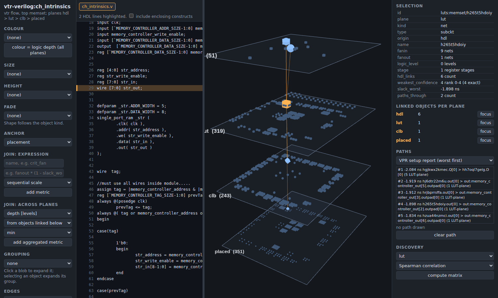
Planes that Odin III does not write yet (ir, gates, ble, routed) are not shown.
2. Provenance links between planes, and what a column is
Each object records where it came from. The bundle has a table of links between objects of different planes (for example an HDL
construct to the cells made from it, a cell to the LUTs derived from it, a LUT to its cluster and its placed atom). Each link says
how it was found (for example cone, name, structural_match) and how sure that is.
A column is everything connected to one object, through all the planes: the object, the objects it links to above and below, and their HDL lines. Clicking an object (or an HDL line) highlights its column in 3D and dims the rest. The right panel gives one line per plane with the count of linked objects and a focus button. Click empty space to clear.
placed to see where it sits on the grid.3. The HDL pane and selecting lines
The pane at the left shows the whole source file with line numbers; several files get tabs. Drag the divider to resize it.
- Click a line, or drag over lines, or shift-click to extend a range.
- The selected constructs are the innermost ones whose span covers the lines. Tick "include enclosing constructs" to take all of them.
- From those constructs the selection follows the links to every object below (cell, LUT, cluster, placed atom). These are highlighted; the rest is dimmed. The right panel counts the objects per plane.
- The reverse also works: clicking an object in 3D highlights its HDL lines in the pane and scrolls to them.
- Clicking the declaration line of a reg selects its flip-flops on every plane; of a wire, its driving logic.
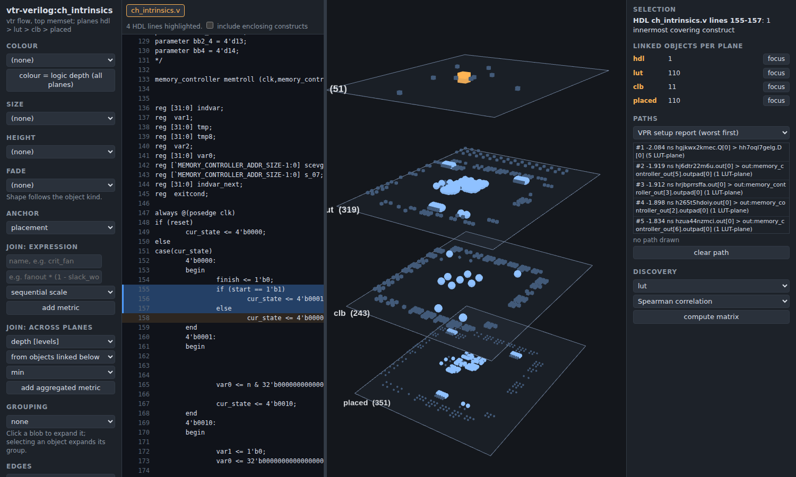
always block, then tick "include enclosing constructs" and watch the counts grow.4. Case tiers A, B, C and the graded mix
Click a line inside a case or an if/else chain (a construct with two or more branches) and the viewer sorts the
objects into three tiers:
| A orange | own: the clicked item |
| B teal | shared: the case itself, and logic that serves the item together with others (select, mux) |
| C violet | context: the other items |
Everything else fades. The source pane shows the clicked item with an orange bar, the case header teal, the other items in a light tint. The right panel counts A, B and C per plane.
On the cell plane the tiers are exact. Below it (lut, clb, placed) a LUT is coloured by the graded mix: its share of A, B and C among the cell-plane objects it was mapped from (orange intensity = A share). A LUT with no cell link keeps its whole tier, and a cluster or placed atom takes the mean over its LUTs. Hover shows the shares.

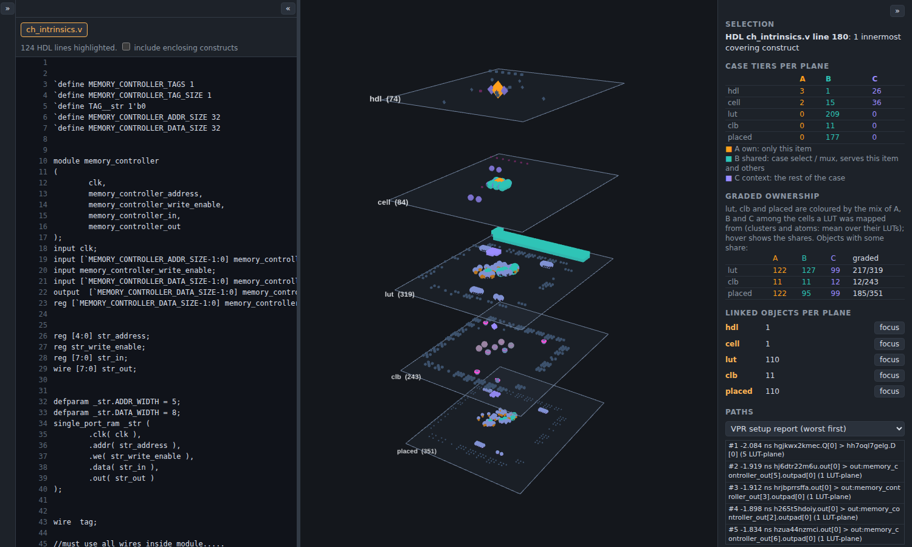
case, click one item, press 2 (the cell plane, second from the top of the non-graph planes) to see tiers A, B, C.5. Buses and flip-flops
Buses. Set Colour to "bus (hue per bus, shade per bit)". Each bus gets a hue and each bit a shade. The legend lists the buses with a filter box and a count; click one to select it on every plane and mark its declaration line. A bus name comes from the object's own net, or, for unnamed logic, from the one bus it feeds. Anything else is grey and counted as "no bus". The option appears only when the bundle has bus names.
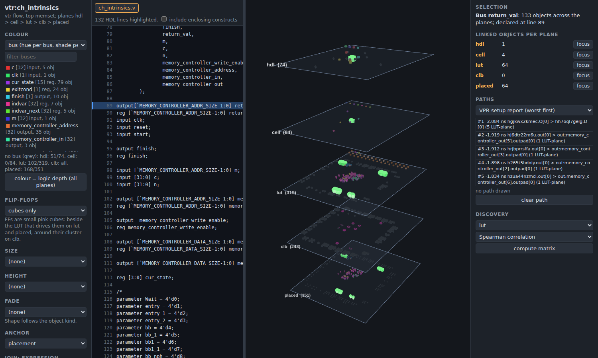
return_val selected.Flip-flops are small pink cubes on every plane: beside the LUT that drives their D input on lut and placed, around their
cluster on clb (a cluster shows one cube per flip-flop inside). The Flip-flops menu has three modes: "cubes only", "highlight FFs",
and "FFs only (others dimmed)". The metric is_ff marks them in the data.
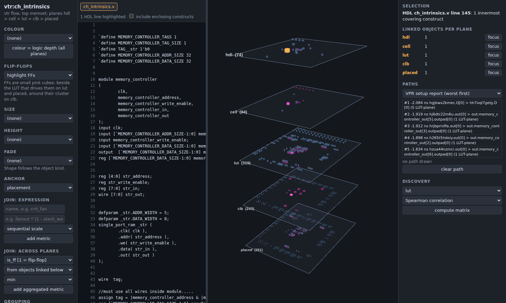
6. Colour, size, height, fade; metrics; joins
Four channels in the left panel each take any metric: Colour, Size, Height (above the plane) and Fade
(blend to the background). The shape follows the object kind. Grey means not measured, and a value is never guessed. The colour
legend gives the range and, per plane, how many objects have a value. Slack uses a diverging scale (red is negative). The button
"colour = logic depth (all planes)" sets colour to logic_level on every plane.
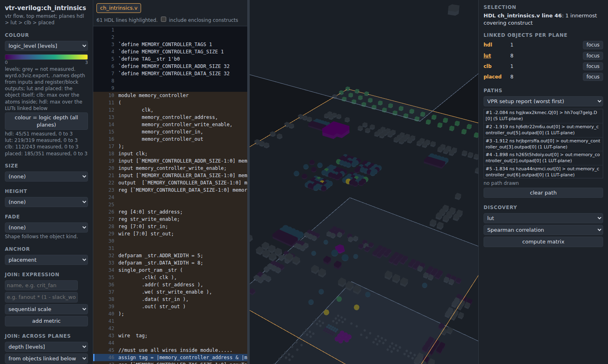
Metrics: where each is measured
| Metric | Source |
|---|---|
fanin, fanout, logic_level | the BLIF from Odin III. logic_level is LUT depth from inputs and register or block outputs; on clb it is the max over the atoms inside, on hdl the max over the LUTs linked below |
stage, seq_level, is_latched, is_po, fanout_comb | computed from the BLIF netlist (see section 7) |
slack_worst, paths_through | VPR's worst 100 setup paths (the report); objects on no reported path stay grey |
atoms, luts_inside, ffs_inside, x, y | VPR's .net and .place |
cc0, cc1, co | Odin III's scoap pass (section 8) |
graph_in, graph_out, is_reset, n_actions, width | the graph planes (stg, cfg, ddg) |
depth, children, span_lines, luts_below, hdl_links, weakest_confidence | Odin III step files and the links table |
Joins: build new metrics
- Expression. Give a name and a formula over metric names, for example
fanout * (1 - slack_worst). Operators+ - * / % ^, comparisons, andabs sqrt log log2 exp floor ceil round min max pow clamp if. It has its own parser (noeval). A missing value gives a missing result. Choose the sequential or the diverging scale. - Across planes.
min,max,mean,sumorcountof a metric over the objects linked below or above. Direct links only, one hop.
New metrics show up in every dropdown.
slack_worst, "from objects linked below", min, then colour the
hdl plane by the new metric: the constructs with the worst LUT light up.7. Anchors, layouts, and the Hutton and Kundarewich panel
The Anchor menu decides where objects sit on each plane. Switching does not reload the bundle.
| Anchor | Layout |
|---|---|
placement | the real grid at the bottom; upper planes at the centroid of what they link to |
ast | the HDL construct tree (root on top, one leaf per column); a LUT at its deepest construct, a cluster at the mean of its LUTs |
pipeline | x = register stage, one block per stage, atoms ordered by logic level |
level | x = logic level, one block per level, atoms ordered by worst slack (worst first) |
hutton | x = delay level, objects stacked per level; flip-flops at level 0 beside the primary inputs, joined to their latched node by the DFF edge |
hutton_seq | as hutton, one strip per sequential level |
kundarewich-<source> | one strip per cluster of the chosen cluster source |
The anchors hutton, hutton_seq and kundarewich-* appear only when the bundle has them. An object that has
no position of its own is moved to a strip below the plane and counted in the manifest; a guess is never drawn as a measurement.

The Hutton and Kundarewich panel
The right panel section "Circuit: Hutton and Kundarewich" describes the lut-plane circuit. Definitions follow P. D. Kundarewich, "Synthetic Circuit Generation Using Clustering and Iteration", MASc thesis, University of Toronto, 2002, which describes M. Hutton, J. Rose, J. Grossman and D. Corneil, "Characterization and parameterized generation of synthetic combinational circuits", IEEE TCAD 17(10):985-996, 1998, and M. Hutton, J. Rose and D. Corneil, "Generation of synthetic sequential benchmark circuits", FPGA 1997. The viewer is descriptive only; it tests no hypothesis.
- Shapes per delay level: node shape (objects), input shape (LUT input pins), output shape (objects that drive something), PO shape (objects that drive a primary output). Choose "whole circuit" or "selection" (an HDL line's logic gets its own shape).
- Fanout distribution: objects per number of LUTs driven.
- Edge length of an edge into a LUT: level(sink) minus level(source). An edge into a flip-flop has length 0 by definition. The Edges menu "circuit edges by length" colours the lut-plane edges by length (pink = 0).
- Cluster source menu:
hdl-module,hdl-block,hdl-item,vpr,mincut(a seeded Fiduccia-Mattheyses bipartition; Kundarewich used hMETIS, this is not hMETIS). - Comb and Latched matrices (Kundarewich 3.3.2): Comb[i][j] counts edges from cluster i that drive combinational nodes in cluster j; Latched[i][j] those that drive flip-flops in cluster j. Heat maps use a log scale; the diagonal is dim. Click a cell: its edges are drawn in yellow and their endpoints and HDL lines are selected. The panel also gives the share of edges that cross clusters.
- Compare with: tick it and pick a second source to see both side by side with their normalised mutual information (NMI), which says how close the HDL hierarchy is to the connectivity hierarchy.
- Colour menu entries "cluster" and "role" (flip-flop, latched node, primary output) appear with this data.
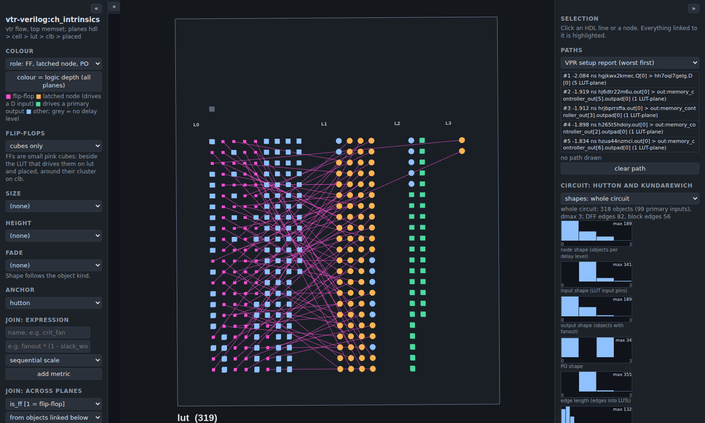
hutton anchor, colour = role.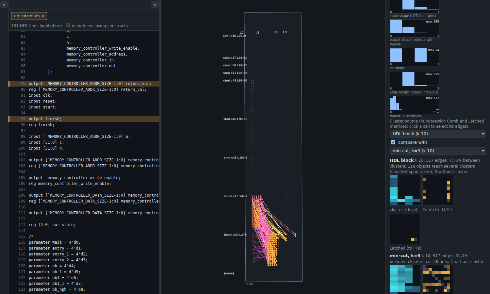
hdl-block; the anchor switches to Kundarewich. Click a hot cell in the Comb matrix and read
the HDL lines of the edges between those two clusters. Then tick "compare with" and choose mincut.8. Paths and SCOAP
The Paths section (right panel) draws a combinational path as a polyline through the objects it passes on the lut and placed planes, and highlights the HDL lines it comes from. The source is always labelled.
- VPR setup report: the reported setup paths, worst slack first. Click one to draw it. Only the data-arrival part is used.
- Netlist cone: from the selected objects, the fan-in, fan-out or both cones in the LUT netlist, with a depth limit. The cone stops at flip-flops, I/O and hard blocks. It follows the selection.
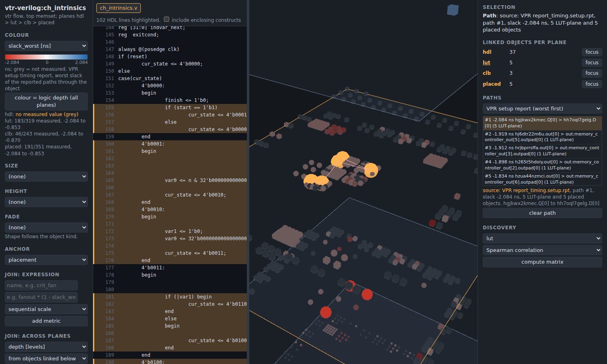
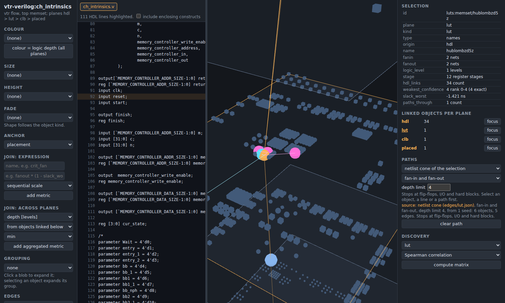
SCOAP testability numbers come from Odin III's scoap pass: cc0 and cc1 (controllability to 0 and to 1)
and co (observability). They exist on lut, placed and ddg where the pass named the net; unreachable means no value. The left
panel "colour = SCOAP with joins" takes CC0, CC1 or CO and min, max or mean, and colours every plane: its own value where measured, else
the min, max or mean over linked objects that have one. Nets named after a port or a register often have no value; the grey is honest.
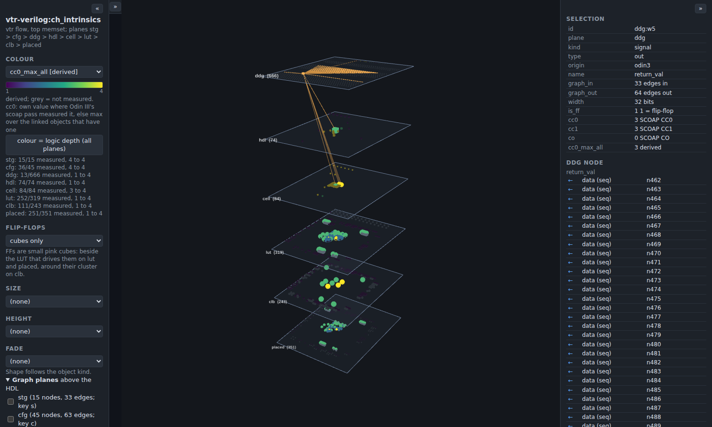
9. Discovery, 2D view, morph, brush, grouping
- Discovery (right panel): pick a plane and Spearman correlation or mutual information (8 equal-width bins, in bits). It shows the matrix of the metrics with 10 or more values. Click a cell: colour = row metric, size = column metric. Pairs with a missing value on either side are left out.
- 2D view (View menu): one plane seen from above, rotation off. The entries are "3D stack" and "2D: <plane>".
- Morph: choose two adjacent planes and drag the slider; the lower plane rises to the upper one and its objects slide to the centroid of the upper objects they link to.
- Brush: hold Shift and drag a rectangle on the 3D view. The objects of the plane chosen in "Shift + drag brushes objects of" are selected and their column is highlighted.
- Grouping: by HDL module or by VPR cluster, one blob per group on lut and placed (colour = mean of the colour metric). Click a blob to expand it; selecting an object expands its group.
- Edges: "k-hop of selection" draws netlist edges within k hops of the selected lut objects; "between groups" draws one line per pair of groups (needs grouping), brighter for more edges.
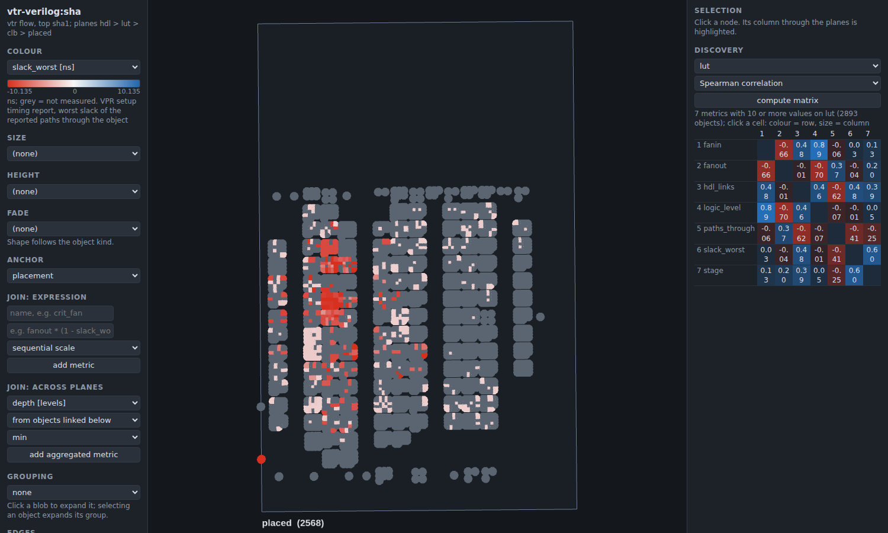
lut, click the cell of fanout against slack_worst, then
look for fat, red objects. Or Shift-drag a box on the 3D view and read the counts in the right panel.10. Planes and camera
- Drag to rotate, right-drag to pan. "auto-rotate", "plane gap" and "reset camera" are in the left panel.
- Focus: keys 1 to 9 move the orbit target to a plane centre (numbered over the planes that are not graph planes, top first); 0 shows the whole stack. The "focus" buttons in the Planes list do the same.
- Zoom to cursor: the wheel zooms towards the point under the cursor on the focused plane, or on the nearest plane under the cursor when none is focused.
- Show / solo / opacity: each plane in the Planes list has a show checkbox, an opacity slider and a "solo" button that hides every other plane (a second click restores them).
- Hover an object for a tooltip; click it for its fields and metrics in the right panel. "clear selection" in the left panel clears.
11. Collapsible panels
Each side panel has a small button at its top (« or ») that turns it into a thin strip; the 3D view takes the
space. Keys: [ left panel, h HDL pane, ] right panel. The state is kept in the browser (localStorage).
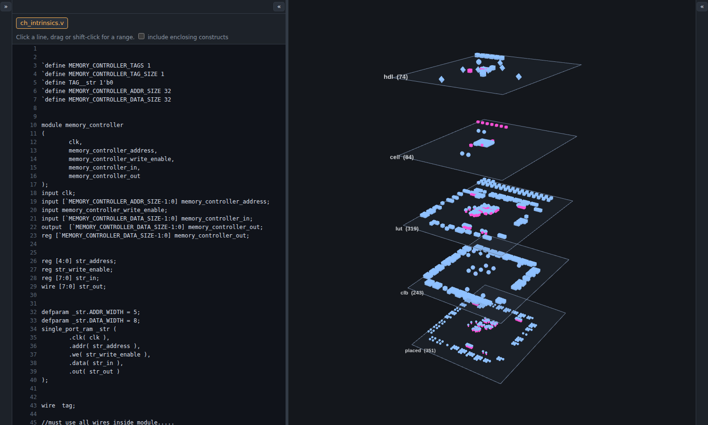
12. Keyboard shortcuts
Keys work when the focus is not in a text box or a menu, and without Ctrl, Alt or Meta.
| Key | Action |
|---|---|
| 0 | whole stack (no focused plane) |
| 1 to 9 | focus the Nth plane, counted over the non-graph planes, top first |
| s | show or hide the STG plane (focuses it when shown) |
| c | show or hide the CFG plane (focuses it when shown) |
| d | show or hide the DDG plane (focuses it when shown) |
| [ | collapse or restore the left panel |
| h | collapse or restore the HDL pane |
| ] | collapse or restore the right panel |
| ? | open this help in a new tab |
Mouse: click selects; drag rotates; right-drag pans; wheel zooms to the cursor; Shift + drag brushes; on the HDL pane, drag or shift-click selects a range.
13. Known limits per plane
- stg: Odin III does not attribute a state or a transition to one case item, so every state links to the same next-state logic. Edges between graph planes (an STG state to the CFG case that computes its transitions) are not drawn. A state has no HDL span of its own.
- cfg: a
joinnode has no HDL span. Links go by HDL span, not by the provenance record number in the graph file. - ddg: big. A real DDG can have thousands of nodes (666 nodes and 12189 edges for the
memsetprocess of ch_intrinsics; 5046 nodes and 124406 edges for sha), so only the edges within k hops of the selection are drawn unless you tick "DDG: all edges". Layers wider than 40 nodes wrap into rows, and temporaries have no HDL span or SCOAP value. - hdl, cell: when Odin III's fsm pass recodes a state variable (ch_intrinsics:
cur_stateto one-hot), the case items are merged after mapping. On the cell plane tiers A, B, C are exact, but on lut, clb and placed every LUT carries the spans of all items and any item shows mostly tier B. - lut, placed: Odin III's abc pass records the cut cone of each LUT only when the run's parent edges fit a budget. On a big design (VTR sha) the budget is exceeded, all LUTs share one record, and per-LUT cell lineage (and so the graded mix) is coarse. SCOAP has no value for LUTs named after an output port or a register.
- clb, placed: objects that mapping removed (nets) have no placed atom; they are put at the mean of their placed neighbours or the grid centre and counted as "unanchored" in the manifest.
- Buses: if the net-number offset cannot be verified, the lut and placed planes get no bus names and the manifest says so.
- A value that was not measured is grey, never a default.